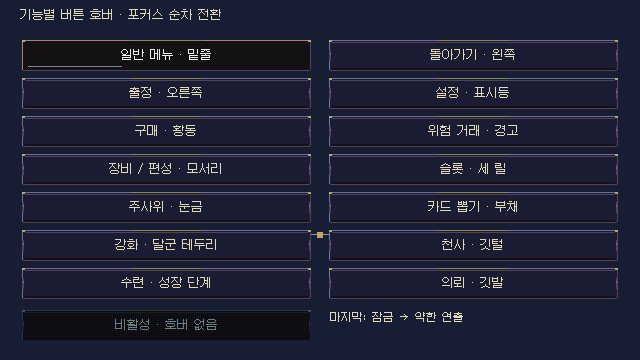

Tracefolio REPORTS & ISSUES
Tracefolio REPORTS & ISSUES 캠프 가디언작업 결과
캠프 가디언작업 결과버튼 호버를 기능별 14종으로 분리
검증 대기공통 입자 폭발을 제거하고 메뉴·이동·설정·거래·장비와 마을 서비스에 맞는 호버를 연결했습니다.
작업 결과
구현 및 Godot 4.7.2 로딩과 14종 실제 렌더링 완료. 게임 전체 화면별 수동 조작은 미확인입니다.
변경 내용
적용 내용
일반 밑줄, 좌우 방향, 설정 표시등, 황동 거래, 위험 경고, 장비 모서리, 슬롯 릴, 주사위 눈금, 카드 부채, 강화 열기, 천사 깃털, 수련 단계, 의뢰 깃발을 연결했습니다. 증강과 손패는 기존 등급 포일을 재사용하고 일반 카드의 반복 별빛 및 일괄 상승을 줄였습니다. 공통 버튼 생성 경로와 빈 제목 버튼, 개발 커스터마이저를 확인했습니다.

검증
Godot 4.7.2 headless 프로젝트 실행에서 스크립트 오류 없음. GTX 970 OpenGL 실제 렌더링으로 14종과 disabled/locked/reduced 상태를 순차 확인했습니다. tools/preview-button-hover.gd로 198프레임을 출력했습니다. 종료 시 리소스 해제 경고 및 user:// 셰이더 캐시 폴더 경고가 남았습니다. 새 테스트·회귀 테스트는 실행하지 않았습니다.
남은 사항
실제 게임의 모든 메뉴를 직접 클릭한 검증과 사용자 체감 평가는 미확인입니다. 프로젝트 빌드·설치·게임 소스 푸시·게임 배포는 수행하지 않았습니다. 추가 지침 변경 없음: 기능별 옵션 추가이며 기존 픽셀 UI 기준을 유지합니다.
작업 시간
- 제안 시간: 8~10분
- 실제로 완료된 시간: 시작 2026-11-17 16:36:33 KST. 구현 및 렌더링 완료 16:41 KST, 약 5분. 보고 등록 시간은 게시 이력으로 구분합니다.
- XERJ: 미사용 — 사용자 지침에 따라 사용하지 않았습니다.